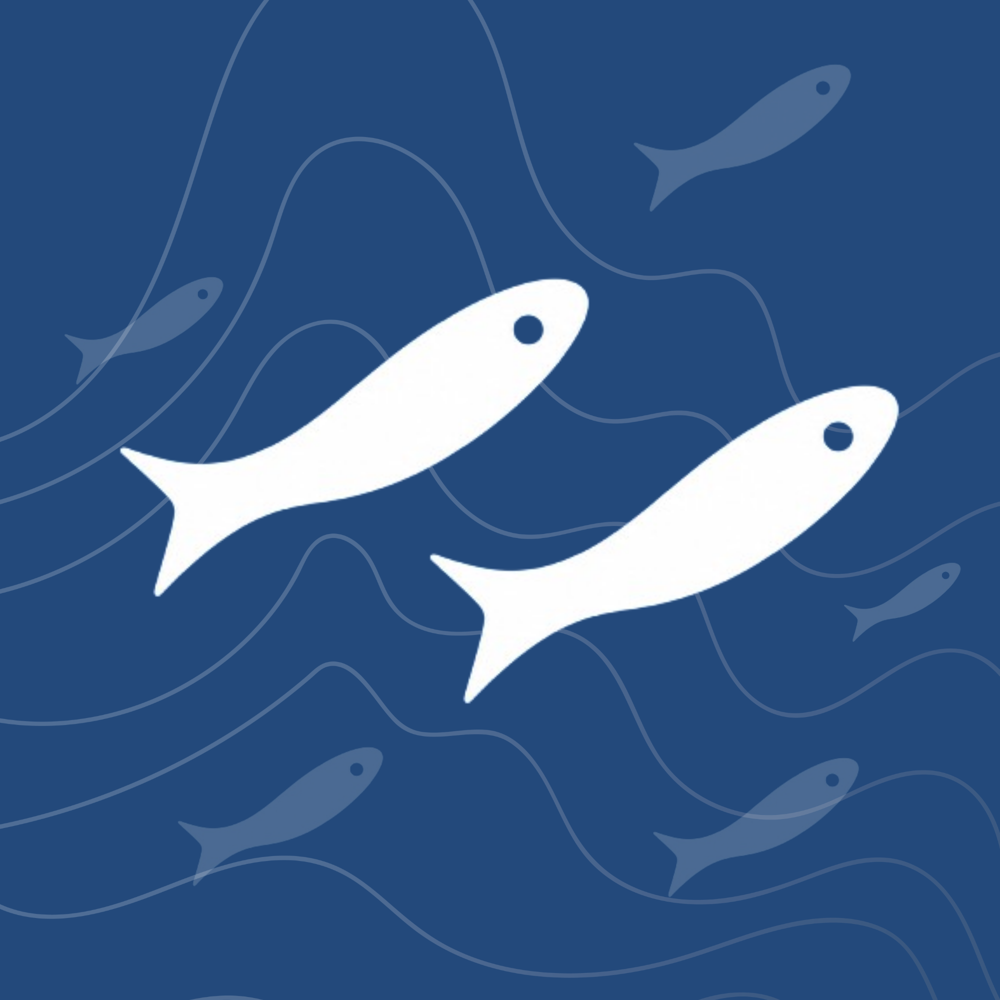

🙋 Inscrever-se no quadro
Você entrará como Membro. O PO pode alterar sua função nas Configurações.

Remove todos os cards ativos e arquivados permanentemente.
Sincronize múltiplos calendários do Google (reuniões, rituais, ausências, feriados) diretamente no board.
Como funciona: Cole o ID de cada calendário do Google desejado. Certifique-se de que a agenda esteja configurada como "Disponibilizar ao público" (ou aberta para a organização) nas configurações do Google Calendar.
Ao adicionar a primeira agenda, o Google vai pedir autorização de leitura do calendário (popup de login).
Ativa uma ficha extra no card (Canal, Objetivo, Plataforma, Formato, Quantidade de criativos, Status de produção e Observações) pra times que produzem peças criativas — pensado pra substituir planilhas de controle. Com a ficha ativa, um painel 🎬 Controle de Criativos aparece no topo do board, listando automaticamente todos os cards com a ficha preenchida, numa tabela filtrável — sempre atualizada, sem trabalho duplicado.
Adiciona ao card um campo separado do Responsável: quem solicitou o card. Pensado pra ficar estável durante toda a execução mesmo quando o Responsável muda de mão (ex.: passa de designer pra redator) — o demandante normalmente não muda. Fica disponível como campo no card, filtro na toolbar, e conta pras notificações de conclusão/desbloqueio (junto com Responsável e Participantes) e pro contexto que o Agente Ágil enxerga.
Crie um ou mais padrões escolhendo, em cada um, quais seções opcionais aparecem no modal do card (ex.: um padrão "Bug" sem Insights do PO, outro "Campanha" com tudo). Marque um como ★ padrão da squad — vale pros cards que não escolherem nenhum. Dentro de cada card, o campo "📐 Padrão de card" deixa escolher outro. Campos estruturais (título, tag, coluna, responsável, prazo, descrição) sempre ficam visíveis, em qualquer padrão.
Emails fora do @ciahering.com.br que podem acessar este board. Entram como convidado.
O PO pode alterar o papel de cada usuário ou convidar alguém pelo email.
PO e organizador criam lembretes para um membro específico ou para a squad inteira. Eles aparecem no quadro de lembretes (filtro PO/Org) de quem for o destinatário.
Cria 4 tags prontas — P, M, G e GG — pra sizing de cards, no espírito da camiseta (o carro-chefe da Hering). A tag cresce visualmente junto com o tamanho.
Campo dedicado "Submarca" no card (Hering Adulto/Kids/Sports/Intimates/Teens) — um board só, com filtros rápidos pra cada marca, no lugar de boards separados por submarca.
Organize as pessoas em subtimes (ex.: Designers, Redatores). Um card pertence a um subtime quando o responsável ou um participante faz parte dele. Subtimes viram filtro e visão de raia. Uma pessoa pode estar em vários.
Configure quais colunas marcam o início e o fim do trabalho. Isso define como o relatório ⏱ Relatórios de Tempo calcula o lead e o cycle time. Se deixar em branco, o sistema tenta adivinhar automaticamente.
Defina de antemão os cards filhos que uma receita gera — ex.: "Campanha de mídia paga" → Feed, Stories, Reels, Display... (dá pra digitar vários de uma vez, separados por vírgula). Cada filho nasce com o título "{card pai} — {nome do filho}", herdando coluna/prazo/prioridade/demandante do pai. Opcionalmente, vincule cada filho — e também o 👑 card pai — a um 📋 Modelo (crie um em ⚡ Funções de card → Modelos) pra nascer/ficar já estruturado: descrição, checklist, tags e riscos vêm do modelo, sem apagar o que já estiver preenchido. Use manualmente (botão "🧩 Aplicar receita" dentro de qualquer card) ou automaticamente, com a ação "🧩 Aplicar fan-out" numa regra abaixo.
Regras que executam automaticamente quando algo acontece no board. Use o AutoLab no Agente Ágil para testar antes de ativar.
Cards muito antigos e parados somem sozinhos do board ativo (continuam salvos em Arquivados, dá pra restaurar a qualquer hora). Só arquiva se as DUAS condições forem verdadeiras: idade mínima E tempo parado sem edição.
Cards importados do Trello antes desta correção podem ter ficado com "tags fantasma" (um ID de tag que não existe mais na configuração — aparece como texto cru no Relatório de Tempo). Clique abaixo para detectar e reparar automaticamente.
Corrige cards que sumiram do board mas continuam existindo no Firebase (bug de reconciliação corrigido na v8.30.210 — ver CHANGELOG). Não apaga nem altera nenhum card, só reconstrói o índice que aponta pra eles.
URL do Worker que faz proxy para a API da Anthropic.
Gera um snapshot completo do board (cards, colunas, tags, eventos, links, modelos) em JSON — compatível com o formato de importação do sistema.
Todo domingo à meia-noite (horário do browser), enquanto o app estiver aberto, o sistema envia um backup do board pro email configurado abaixo via EmailJS (gratuito).
Como configurar o EmailJS →
{{squad}}, {{date}}, {{summary}}, {{json_url}}Cada backup manual ou automático salva um snapshot completo no Firebase. Clique em qualquer um para baixar o JSON.
Quando ativado, este card volta sozinho pro quadro na frequência escolhida. O sistema verifica ao abrir o board e avisa quem estiver online.
💡 O conteúdo do card (descrição, checklist, tag) é copiado do item recorrente. Edite o item para mudar o que vem preenchido.
Duplicando "". O título sempre copia (com "(cópia)" no final) — escolha a coluna de destino e o que mais entra na cópia:
Selecione o card do qual este card depende.
Membros encontrados no Trello. Confirme ou corrija as iniciais do board para cada um antes de importar.
Este é o board ágil do seu squad — aqui você acompanha as tarefas da sprint, registra impedimentos, vê prazos de campanhas e se comunica com o time.
Dica rápida de navegação: